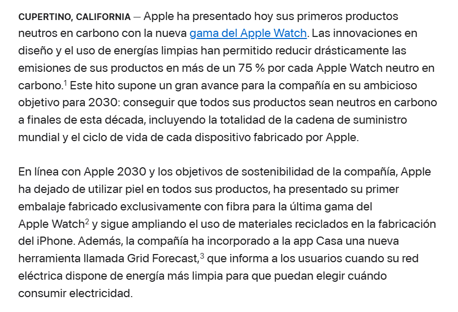
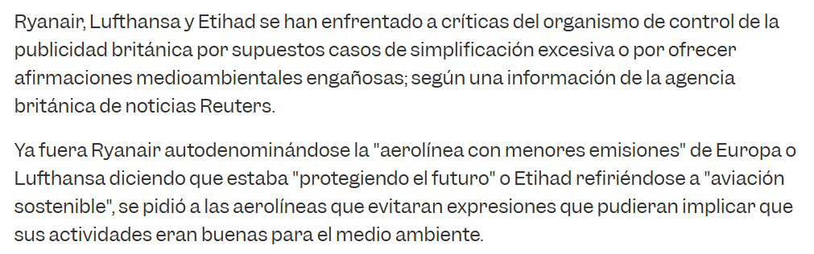
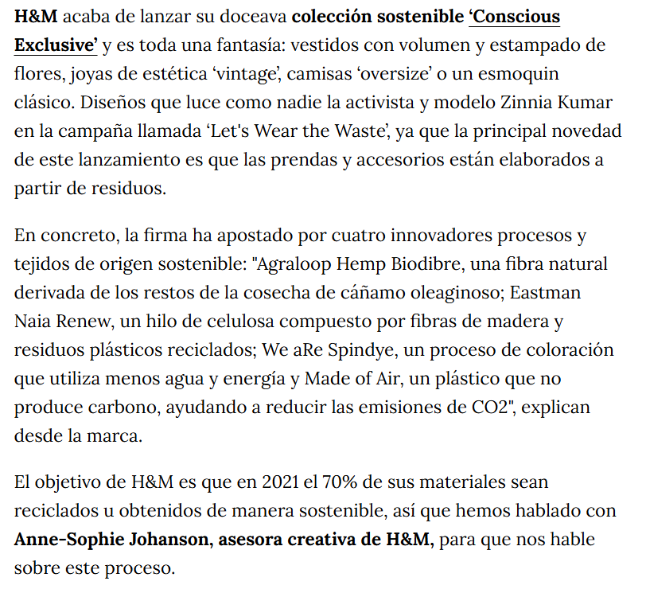
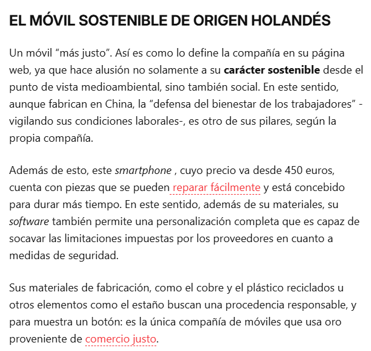

Apple presenta sus primeros productos neutros en carbono

Apple declara lo siguiente:
Reducción de emisiones
Dice haber recortado las emisiones de cada Apple Watch neutro en carbono en más de un 75 %, gracias a mejoras de diseño y al uso de energías limpias.
Objetivo 2030
Quiere que todos sus productos sean neutros en carbono a finales de la década, incluyendo la cadena de suministro y el ciclo de vida completo.
Otras medidas
Ha dejado de usar piel en todos sus productos, ha lanzado su primer embalaje hecho solo con fibra para el Apple Watch y usa cada vez más materiales reciclados en el iPhone.
Pruebas
Apple dice que reduce las emisiones de fabricación en torno a un 75 % y compensa el resto con un proyecto de eucaliptos en Paraguay. En agosto de 2025 un tribunal de Fráncfort le prohibió anunciarlo así en Alemania: los contratos de arrendamiento del 75 % de la superficie solo llegaban a 2029 y no había garantía de continuidad. Apple respondió que la sentencia respalda en general su enfoque.
Clasificacion:
| Inflexibilidad | Calculo de riesgos | Contingencia | Lavado de imagen | Compromiso |
Veredicto:
No cumpliría Es una alegación de neutralidad climática basada en compensaciones, prohibida desde el 27/09/2026 aunque las compensaciones sean de calidad.
Mensaje Reescrito
Fabricado con un 75 % menos de emisiones que (Aquí deben poner el modelo de referencia). Publicamos el cálculo en nuestro informe ambiental.
Ryanair - “la aerolínea con menores emisiones”

Ryanair declara lo siguiente:
Ryanair declara que es la aerolínea con menores emisiones de Europa. Con ese mensaje sugiere que volar con ella es más respetuoso con el medio ambiente que hacerlo con otras compañías.
Pruebas
Se basaba en emisiones por pasajero y kilómetro (66 g de CO₂). El regulador británico (ASA) concluyó en 2020 que la comparación no era de todo el mercado, que el gráfico de Eurocontrol la situaba quinta de 27 aerolíneas y que la base del cálculo no estaba clara. Ryanair se declaró “decepcionada y sorprendida” y sostuvo que cumplía la normativa.
Clasificacion:
| Inflexibilidad | Calculo de riesgos | Contingencia | Lavado de imagen | Compromiso |
Veredicto:
No cumpliría “Bajas emisiones” es una alegación genérica sin excelencia ambiental reconocida, y la comparación no se sostiene.
Mensaje Reescrito
En 2019 emitimos 66 g de CO₂ por pasajero y kilómetro, calculado con nuestra flota y ocupación. Volar sigue generando emisiones: este es nuestro plan para reducirlas (Ahora aquí ponenen su objetivo y fecha).”
H&M - colección “Conscious”

H&M declara lo siguiente:
Agraloop Hemp Biofibre
Fibra natural hecha con los restos de la cosecha de cáñamo.
Eastman Naia Renew
Hilo de celulosa con fibras de madera y residuos plásticos reciclados.
We aRe Spindye
Un proceso de teñido que usa menos agua y energía.
Made of Air
Un plástico que no produce carbono y ayuda a reducir las emisiones de CO2.
Pruebas
La autoridad de consumo noruega (2019) consideró la información “insuficiente” y engañosa. En 2022 la autoridad neerlandesa (ACM) concluyó que usaba “Conscious” sin explicar su significado, y H&M se comprometió a ajustar o retirar las alegaciones no justificadas.
Clasificacion:
| Inflexibilidad | Calculo de riesgos | Contingencia | Lavado de imagen | Compromiso |
Veredicto:
No cumpliría “Conscious” y “sostenible” son términos genéricos sin certificación reconocida. Solo valdrían afirmaciones específicas y demostrables en el mismo soporte. Deberian haberlo sustiuido por los datos reales que utilizan las prendas
Mensaje Reescrito
Vestido hecho con un (X) % de fibra de cáñamo procedente de restos de cosecha. Teñido con un proceso que usa un (X) % menos de agua que el teñido convencional, comprobado por (organismo independiente).
Fairphone - “Diseñado para durar. Hecho justo.”

Fairphone declara lo siguiente:
Fairphone declara que su móvil es “más justo”, tanto con el medio ambiente como con las personas.
Social
Aunque fabrica en China, dice que defiende el bienestar de los trabajadores y vigila sus condiciones laborales.
Durabilidad
El móvil está pensado para durar más y sus piezas se pueden reparar fácilmente.
Materiales
Usa cobre y plástico reciclados, y estaño de procedencia responsable. Afirma ser la única compañía de móviles que usa oro de comercio justo.
Software
Permite una personalización completa.
Pruebas
Publica cada año un informe de impacto con indicadores y auditoría externa, detalla el porcentaje de materiales, cuenta con 10/10 de reparabilidad en iFixit y oro Fairtrade certificado. Explica en su web qué significa cada eslogan. Hay críticas a la metodología (por ejemplo, el peso de los reciclados), pero los datos son públicos y contrastables.
Clasificacion:
| Inflexibilidad | Calculo de riesgos | Contingencia | Lavado de imagen | Compromiso |
Veredicto:
Las afirmaciones concretas (porcentajes, certificaciones, puntuación de reparabilidad) son válidas. Frases amplias como “el móvil más sostenible” sí necesitarían respaldo reconocido o concretarse.